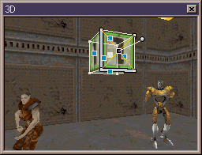
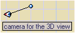

Floating 3D windows
Updated 14 Aug 2005
- QuArK Information Base
- 1. Introduction to QuArK
- 1.5. Map-editor in QuArK
|
|
Floating 3D windows
Updated 14 Aug 2005
|
Upper levels: - QuArK Information Base - 1. Introduction to QuArK - 1.5. Map-editor in QuArK |
|
1.5.10. Floating 3D windows |
[ - - ] |
You can create a new floating 3D-window, from the 'Layout menu', or the '3D windows' icons. |
|
Index |
|
3D Edit Window |
Decker - 28 Feb 2001 | [ Top ] |
|
 In the 3D window, you will be able to move around in the level, almost as if you were doing it using NOCLIP in the FPS-game. To move around, you can use the mouse, or keys, when the mouse is inside the 3D-window so the window becomes active. The keys you can find and redefine in the '3D View' options. Another feature of the 3D window is, that you can edit your map in it. You can click on a polyhedron, and it will appear selected with wireframes. You can move the selection around, just as you would do it on the map-views. Even align textures on faces can be done in the 3D window. |
|
Camera Position |
Decker - 14 Aug 2005 | [ Top ] |
|
 Once you have created a new 3D-window, a 'eye'-icon will appear in your map-views, showing where the camera are positioned in the level, and in what direction its pointing. You can move this camera around, and adjust its direction-handle, just like any other entity. However the camera won't be a visible object in the 'Tree-view (hierarchy-view)', since it only exist when a 3D-window are open. If you have more than one 3D-window opened, there will also be more 'eye'-icons in your map-views. One per 3D-window. QuArK also has a function to set and store 3D camera views. This feature will only work for the Editor's 3D view and not the separate 3D view windows or the OpenGL window. To activate and use this function follow the steps below: 1) First, set your view or camera eye to where you want it in the 3D view. 2) In one of the 2D views RMB click on it and a bar will appear that says Add position, LMB click the bar and a dialog input window will open that has, next to Enter the name:, Camera Position, put a number behind that so you have like Camera Position 1 now. There is also a check box below that, local:, you can use to put that camera position into a group folder. If you do not have one selected then it will make its own folder and you can put all of your camera positions in that one folder. Once you have done this just hit your enter key to close the dialog window and a Camera position entity will be created in the Tree View. You can setup as many positions as you like. Then save your file so you do not loose them, but you do not need to close the file. 3) To use those positions, hold down your c key and press your Page Up and Page Down keys to move through each one. 4) Now here's the trick, or bug, when you do close that file and reopen it, if you try to use the c key, Page Up and Page Down feature, you will get an Information message that says You need to set or store a view first for this to work. Instead of doing that, which you can also do to reset any camera position by using your RMB over it, just close that message, go to the Search menu and select Find Camera Positions. This will cause a dialog window to open. Next to the Positions title click the down arrow and pick any position, then click on the V button below it. This will take you to that 3D view position AND reactivate the c, Page Up and Page Down feature once again for as long as you keep that session of QuArK open. |
|
Copyright (c) 2009, GNU General Public License by The QuArK (Quake Army Knife) Community - http://quark.sourceforge.net/ |
[ - Top - ] |